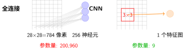
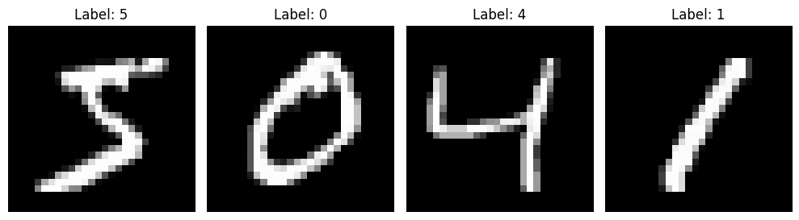

引言#
在本教程中，我们将使用MNIST手写数字识别作为案例，从零开始构建神经网络。通过这个经典任务，你将理解为什么全连接网络不适合图像任务，以及CNN如何通过巧妙设计解决这个问题。
前置提醒
本章是计算图、反向传播与梯度下降：深度学习核心数学基础的实践延伸。我们将用PyTorch实现前一章学习的理论：
计算图 → PyTorch自动求导
激活函数 → ReLU和Softmax的实际应用
反向传播算法 →
loss.backward()的魔法梯度下降与优化算法 →
optimizer.step()的参数更新
如果你还不熟悉这些概念，建议先回顾前一章。
构建成功神经网络的四个目标#
设计神经网络时，我们需要在以下目标间取得平衡：
目标 |
含义 |
关键挑战 |
|---|---|---|
表达能力 |
学习复杂模式的能力 |
层数和神经元数量的权衡 |
泛化性能 |
在新数据上的表现 |
避免过拟合与欠拟合 |
计算效率 |
训练和推理速度 |
参数量和计算量的控制 |
可解释性 |
理解模型决策过程 |
深度网络的"黑盒"特性 |
本章我们将通过对比全连接网络和CNN，深入理解这些目标之间的权衡。
学习路径：从简单到复杂#
为什么先学全连接网络？#
全连接网络（Fully Connected Network）是最简单的神经网络架构。我们将在全连接神经网络中深入实现这一结构：
直观易懂：每个输入连接每个输出，像多层感知机
暴露问题：参数量随输入维度爆炸式增长
性能瓶颈：在图像任务上效率低下，为CNN的改进做铺垫
为什么CNN更适合图像？#
卷积神经网络（CNN）通过两个关键设计解决全连接的问题。卷积神经网络将详细解析这些机制：
1. 局部感受野
全连接：784个输入像素 → 全部连接到每个隐藏神经元
CNN：3×3卷积核 → 只看9个相邻像素
2. 权值共享
全连接：每个连接有独立参数（784×256=200,704个）
CNN：一个卷积核滑过整张图像，参数重复使用（仅3×3=9个）
LeNet-5架构详解将展示这些思想如何转化为一个完整的、可部署的识别系统。

全连接 vs CNN 的核心差异
参数量对比：
全连接第一层：784 × 256 + 256 = 200,960 参数
CNN第一个卷积层（32个3×3核）：32 × (3×3 + 1) = 320 参数
差距超过600倍！这就是为什么CNN在图像任务上成为标准。
归纳偏置（Inductive Bias）#
归纳偏置是指学习算法对特定类型解决方案的偏好 [Mit80]。它不是写在代码里的显式规则，而是架构设计隐含的"先验假设"。
架构 |
归纳偏置 |
隐含假设 |
|---|---|---|
全连接 |
弱/无 |
所有输入特征同等重要，无特定结构 |
CNN |
局部性 + 平移不变性 |
相邻像素相关，特征位置不重要 |
为什么归纳偏置重要？
数据效率：好的偏置让模型用更少数据学到规律
全连接：必须"看到"数字7在每个位置，才能识别
CNN：学到一个位置的"7"，自动应用到其他位置（平移不变性）
参数效率：好的偏置减少所需参数
全连接：需要为每个位置的每个模式单独学习
CNN：一个卷积核识别所有位置的相同模式
泛化能力：偏置反映了任务的本质结构
图像的局部相关性是物理世界的客观规律
CNN将这种规律"内置"到架构中
贝叶斯视角：先验知识的力量#
直观理解
从贝叶斯统计的角度看，归纳偏置就是先验知识——在看到数据之前，你已经相信的假设：
概念 |
含义 |
在CNN中的体现 |
|---|---|---|
先验（Prior） |
看到数据前的信念 |
“相邻像素相关，卷积核应该局部连接” |
似然（Likelihood） |
数据对假设的支持 |
训练样本显示哪些特征对分类有用 |
后验（Posterior） |
看到数据后的更新信念 |
学到的具体卷积核权重 |
为什么先验重要？
想象猜硬币：
无先验（全连接）：看到3次正面，就认为硬币100%正面朝上（过拟合）
有先验（CNN）：相信硬币基本公平，3次正面只是偶然（泛化好）
CNN的归纳偏置就是给模型一个"好先验"——让它一开始就知道该关注什么（局部特征），而不是从零开始学习所有可能。
数学表达
贝叶斯定理告诉我们如何更新信念：
\(P(\text{假设})\)：先验概率 → CNN的架构设计（局部连接、权值共享）
\(P(\text{数据}|\text{假设})\)：似然 → 训练数据的支持程度
\(P(\text{假设}|\text{数据})\)：后验概率 → 学到的最终模型
关键洞察：好的归纳偏置 = 好的先验 → 后验更快地收敛到真实分布，且需要更少的数据。
直观理解
想象教小孩认字：
全连接：每遇到一个"7"，都当作全新的符号教一遍（无先验，每个位置独立学习）
CNN：教一次"7"的特征，孩子自动能在任何位置认出它（有先验，平移不变性）
这就是归纳偏置的力量——好的架构让学习事半功倍。
MNIST：深度学习的"Hello World"#
MNIST数据集包含70,000张手写数字图像（28×28像素，0-9共10类），是理想的入门案例：
{kind=link}

MNIST手写数字样本#
为什么选择MNIST？
规模适中：足够展示深度学习效果，又小到几分钟完成训练
预处理完善：图像已标准化，无需复杂数据清洗
直观可解释：人类可以直观验证模型学习的内容
历史意义：从LeNet(1989)到现代深度学习，见证了整个领域发展
本章学习路线图#
核心问题驱动：
阶段 |
问题 |
答案 |
章节 |
|---|---|---|---|
全连接 |
为什么不适合图像？ |
忽略空间结构，参数量爆炸 |
|
CNN |
如何减少参数？ |
局部感受野 + 权值共享 |
|
LeNet |
为什么成为经典？ |
端到端学习，工程实用 |
|
训练 |
如何调试模型？ |
监控损失曲线，学习率调优 |
|
实验 |
CNN真的更好吗？ |
对比参数量、准确率、训练速度 |
|
缩放定律 |
模型越大越好吗？ |
遵循幂律，但有边际递减 |
本章目标
完成本章后，你将能够：
理解为什么CNN在图像任务上更高效（实验对比：全连接 vs CNN）
掌握训练过程中的调试技巧（神经网络训练基础）
用实验数据验证理论分析（实验对比：全连接 vs CNN）
理解现代大模型的设计原则（缩放定律）
下一步#
理论铺垫已完成。现在让我们进入实践：
全连接神经网络：实现全连接网络，感受参数量爆炸
卷积神经网络：理解卷积操作，学习参数共享
LeNet-5架构详解：分析第一个成功的CNN架构
神经网络训练基础：掌握训练调试技巧
实验对比：全连接 vs CNN：用数据验证理论
缩放定律：理解模型规模的数学规律
让我们开始构建第一个神经网络！
参考文献#
Tom M Mitchell. The need for biases in learning generalizations. Technical Report, Department of Computer Science, Laboratory for Computer Science Research, Rutgers University, 1980.
贡献者与修订历史
查看详细修订记录
-
59126f42026-04-26 - Heyan Zhu: docs(math-fundamentals): update content structure and add citations -
cec393d2025-12-11 - Heyan Zhu: docs: partially complete migration and restructure course materials -
0c291d72025-12-10 - Heyan Zhu: docs: restructure course materials and add new content